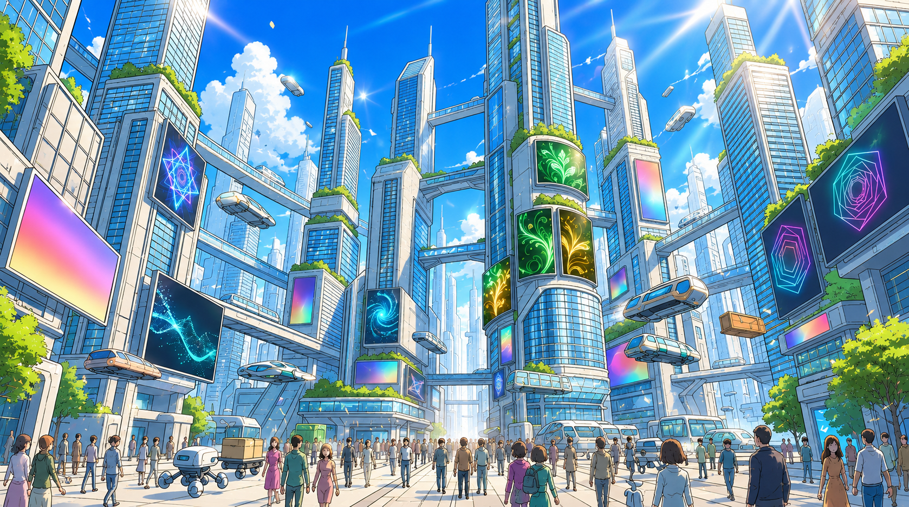
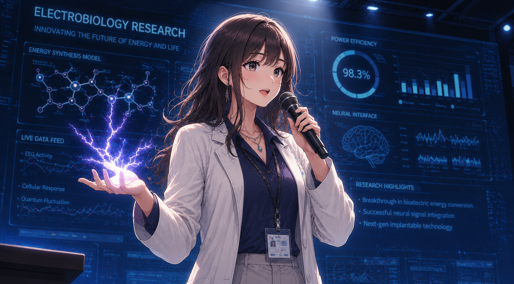
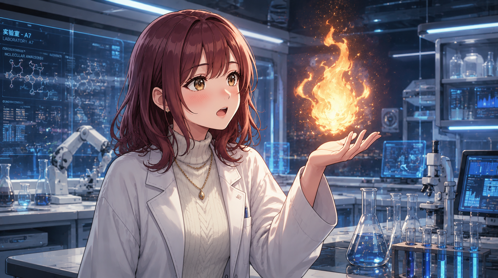
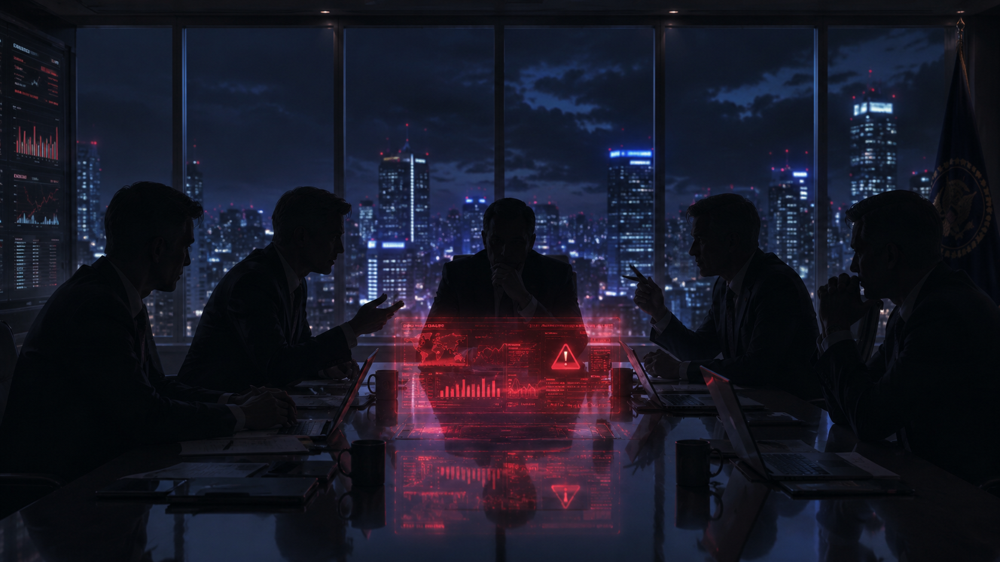
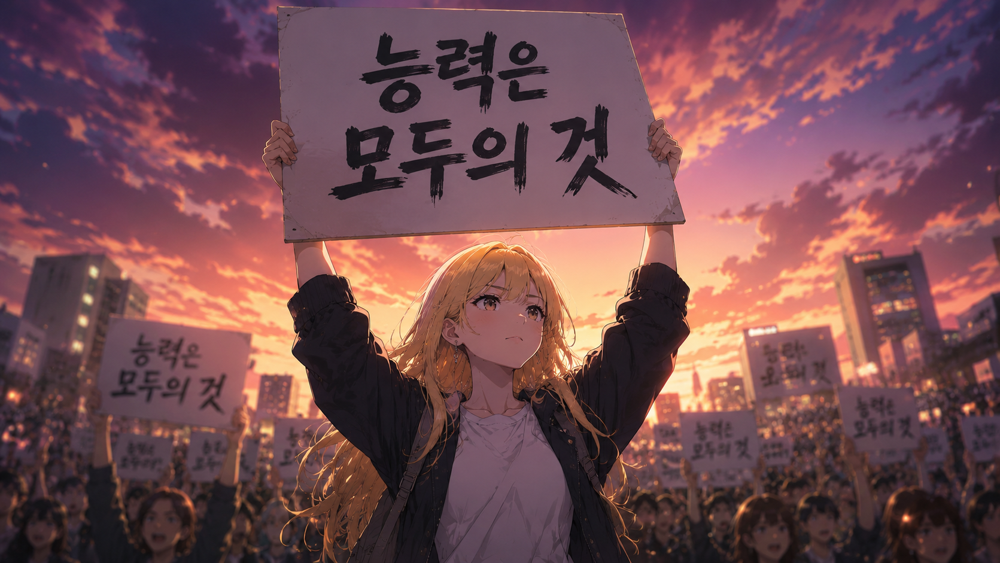
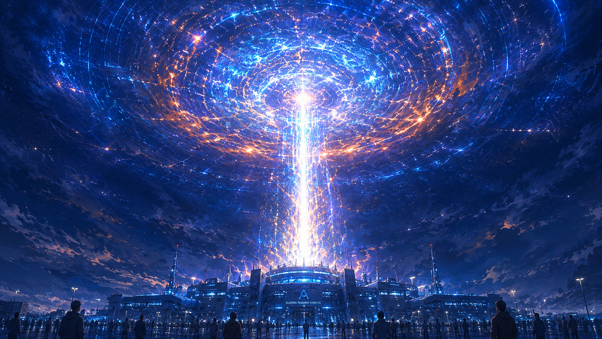

아스텔
EP. 01
2400년.

인류는
새로운 국면을 맞이했다

과학의 정점에 오른 인류는

...말도 안 돼
마침내 상상조차
못 했던 힘을 손에 넣었다
사람들은 이를
축복이라 여겼다

우려하는 목소리도 있었지만

모든 인류가 힘을 가져야 한다는
여론을 막을 순 없었다

그렇게 전 인류
초능력화 프로젝트가 시행되었다
이전 화 없음
다음 화 →